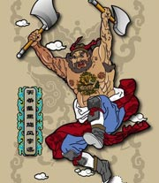

百家讲坛全集
>
百家讲坛2009
>
百家讲坛 鲍鹏山新说《水浒》_李逵

名称：
集数：
播出时间：
百家讲坛 鲍鹏山新说《水浒》_李逵
6
2009年06月22日
李逵是中国古代小说《水浒传》中的一位重要人物，他也是在《水浒传》中最鲁莽的人物，尽管如此，但他为人心粗胆大、率直忠诚、仗义疏财，是《水浒传》中不可或缺的角色。
分集介绍
《百家讲坛》 鲍鹏山新说《水浒》_李逵 （一） 初见宋江
播出时间：
主讲人：
介绍：
2009年06月22日
鲍鹏山
上海电视大学副教授鲍鹏山分析了李逵的性格，并介绍了李逵与宋江第一次见面时的故事。
《百家讲坛》 鲍鹏山新说《水浒》_李逵 （二） 天生闯祸王
播出时间：
主讲人：
介绍：
2009年06月23日
鲍鹏山
中国著名小说 《水浒传》中有许多经典人物，李逵与宋江的奇特关系，使人疑惑不解，李逵是一个鲁莽之人，而宋江则是城府极深的人，他们两个能走到一起是何种组合，正式因为他们的相互欣赏，才使得两个人相互尊敬，相处融洽，谱写出了一段武侠传奇，鲍鹏山教授为大家讲述李逵的英雄传奇。
《百家讲坛》 鲍鹏山新说《水浒》_李逵 （三） 真假李逵
播出时间：
主讲人：
介绍：
2009年06月24日
鲍鹏山
上海电视大学副教授鲍鹏山新说《水浒》，讲述了李逵为了接自己的母亲上梁山，下山途中碰到了假李逵。
《百家讲坛》 鲍鹏山新说《水浒》_李逵 （四） 杀人如麻的李逵
播出时间：
主讲人：
介绍：
2009年06月25日
鲍鹏山
鲍鹏山认为李逵杀人如麻，并总结了他杀人的六个特点，分别是杀的快，杀的多，谁挡我路我杀谁，多杀无辜，毫不歉疚并且手段残忍。
《百家讲坛》 鲍鹏山新说《水浒》_李逵 （五） 行侠仗义的李逵
播出时间：
主讲人：
介绍：
2009年06月26日
鲍鹏山
这一个世界有的时候需要李逵这样的杀星，因为李逵所处的那个时代，假如一个社会，总是处于一种无序的状态，总是有人压迫人，有人剥削人，那么广大的弱者，在无奈的情况之下，在无法反抗的情况之下，只能够压抑着怒火，只能够带着满腔的怨气，很压抑地的生存。那么我把这种状况，就叫做“带气生存”，《水浒》所反应的，就是这样的一种生存的状态。
《百家讲坛》 鲍鹏山新说《水浒》_李逵 （六） 李逵之死
播出时间：
主讲人：
介绍：
2009年06月27日
鲍鹏山
我们在上一讲里面讲到，李逵是一个杀星，是一个非常残忍、凶狠、嗜血的这么一个人物。但是说到这个地方，就有一个问题了，实际上我们说，在阅读《水浒》的时候，我们有一种非常强烈的一种感觉，就是李逵实际上又是一个非常招人喜欢的人物，历来的读者都非常喜欢李逵。所以这个地方就存在一个很大的反差，一个残忍的人物为什么我们会喜欢他？